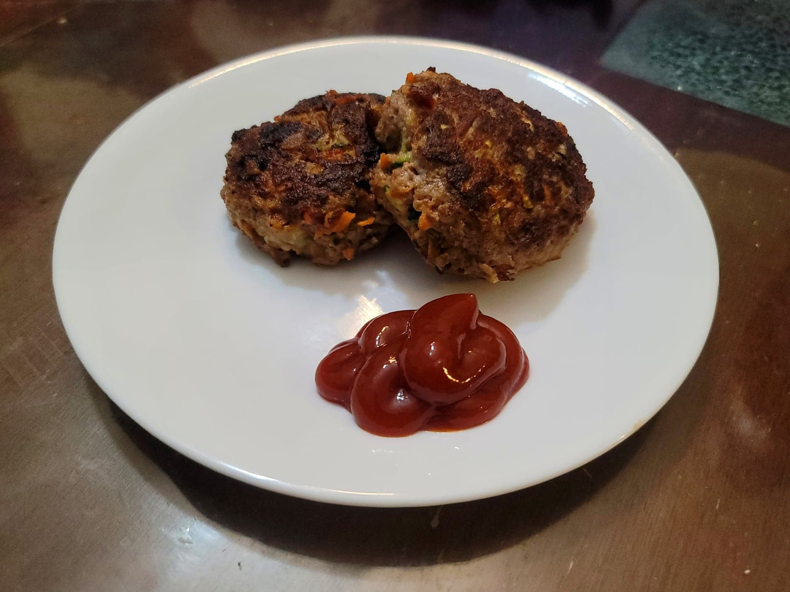

Rissoles

Ingredients:
Rissoles:
- 1 lb Ground beef, about 90/10
- 1 small Onion, grated
- 1/2 Panko bread crumbs or Bread crumbs, or more as needed
- 1 small Carrot, peeled and grated
- 1 small Zucchini, Grated
- 1 large clove Garlic, minced
- 1 Egg
- 1/2 tsp Dried oregano
- 1/2 tsp Dried Thyme
- 1/2 tsp Black pepper
- 1/2 tsp Salt
- 2 tsp Worcestershire sauce
To Fry:
Instructions:
- Combine the grated onion and breadcrumbs. Then mix in the rest of the rissole ingredients until well combined.
- Heat the oil in a skillet over medium heat. Form the meat mixture into 1/4 cup sized thick patties. Add patties in batches of 4-5 to the skillet. Cook for about 4 minutes per side and then transfer to a serving plate. Repeat for the rest of the meat mixture.
- Serve immediately with ketchup.